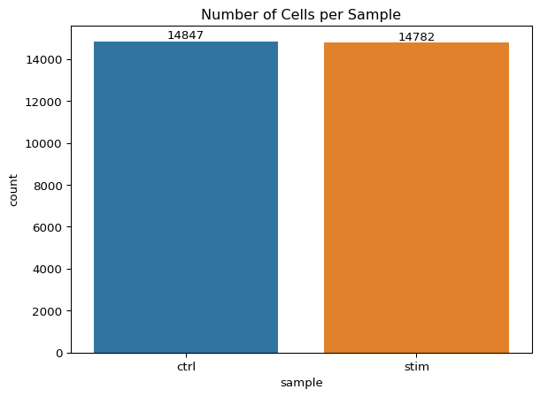
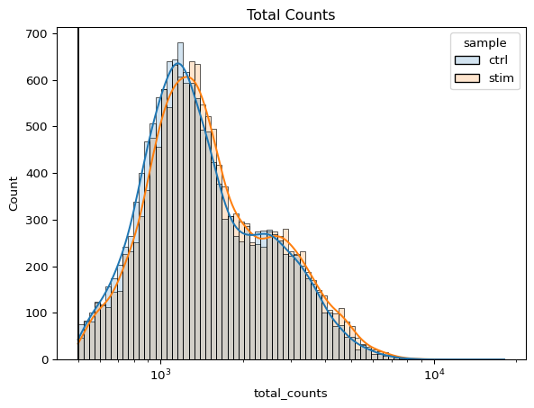
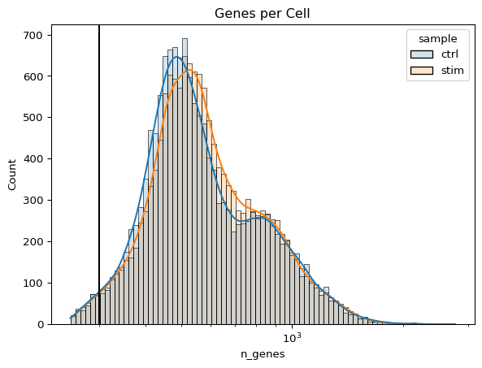
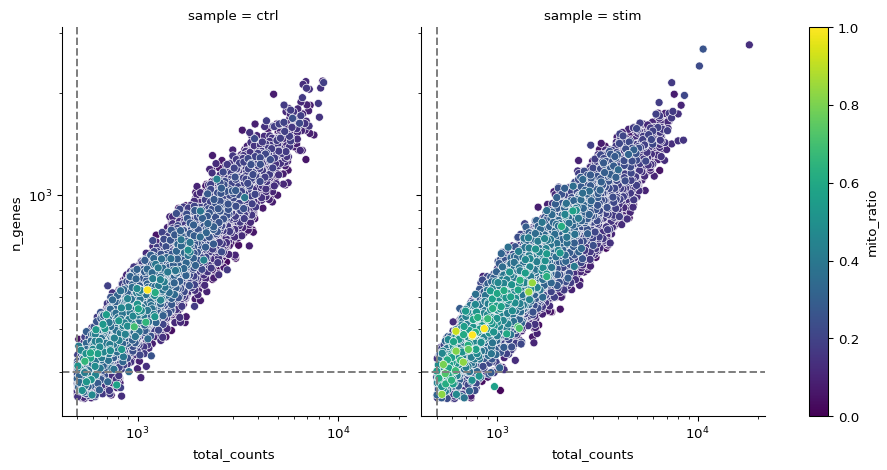
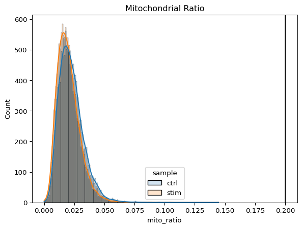
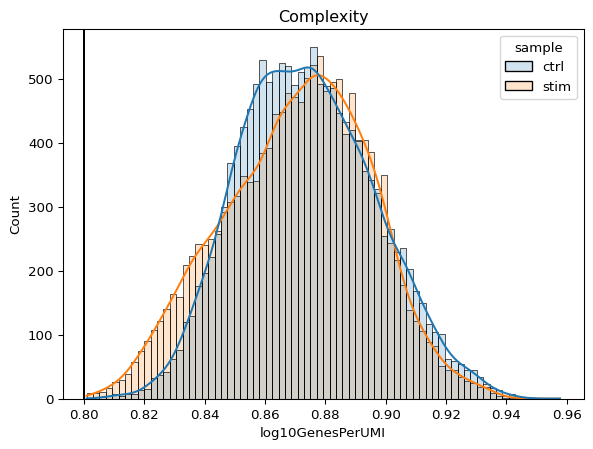

# Save filtered subset to new metadata
metadata_clean = adata_filt.obsQuality Control Analysis- Answer Key
Exercise 1
Extract the new metadata from the filtered Seurat object using the code provided below:
1. Perform all of the same QC plots using the filtered data.
Cell counts
After filtering, we should not have more cells than we sequenced. Generally we aim to have about the number we sequenced or a bit less.
# Cell counts
ax = sns.countplot(data=metadata_clean, x="sample", hue="sample")
ax.set_title("Number of Cells per Sample")
# Add counts above the bars
for container in ax.containers:
ax.bar_label(container)
plt.show()
UMI counts
The filtering using a threshold of 500 has removed the cells with low numbers of UMIs from the analysis.
# UMI counts
ax = sns.histplot(metadata_clean, x="total_counts", hue="sample",
kde=True, # adds line showing general trend
log_scale=True, # apply log scale to counts
alpha=0.2)
ax.set_title("Total Counts")
# Add line showing potential threshold
ax.axvline(500, color="black")
Genes detected
# Genes detected
ax = sns.histplot(metadata_clean, x="n_genes", hue="sample",
kde=True, # adds line showing general trend
log_scale=True, # apply log scale to counts
alpha=0.2)
ax.set_title("Genes per Cell")
# Add line showing potential threshold
ax.axvline(300, color="black")
UMIs vs genes
# Order dataset so values are plotted
# such that largest values are on top
meta = metadata_clean.sort_values('mito_ratio', ascending=True)
g = sns.FacetGrid(meta, col="sample", height=5)
g.map_dataframe(sns.scatterplot,
x="total_counts",
y="n_genes",
hue="mito_ratio",
palette="viridis")
# Scale x,y axes by log10
for ax in g.axes.flat:
ax.set(xscale="log", yscale="log")
# Add threshold lines
g.refline(x=500, y=300)
# Add colorbar for the legend
sm = g.axes[0, 0].collections[0]
plt.colorbar(sm, ax=g.axes,
label="mito_ratio")
Mitochondrial counts ratio
ax = sns.histplot(metadata_clean, x="mito_ratio", hue="sample",
kde=True, # adds line showing general trend
alpha=0.2)
ax.set_title("Mitochondrial Ratio")
# Add line showing potential threshold
ax.axvline(0.2, color="black")
Novelty
# Novelty
ax = sns.histplot(metadata_clean, x="log10GenesPerUMI", hue="sample",
kde=True, # adds line showing general trend
alpha=0.2)
ax.set_title("Complexity")
# Add line showing potential threshold
ax.axvline(0.8, color="black")
2. Report the number of cells left for each sample, and comment on whether the number of cells removed is high or low. Can you give reasons why this number is still not ~12K (which is how many cells were loaded for the experiment)?
There are just under 15K cells left for both the control and stim cells. The number of cells removed is reasonably low.
While it would be ideal to have 12K cells, we do not expect that due to the lower capture efficiency (i.e. the number of actual cells encapsulated within droplets containing barcodes) of these technologies. If we still see higher than expected numbers of cells after filtering, this means we could afford to filter more stringently (but we don’t necessarily have to).
3. After filtering for nGene per cell, you should still observe a small shoulder to the right of the main peak. What might this shoulder represent?
This peak could represent a biologically distinct population of cells. It could be a set a of cells that share some properties and as a consequence exhibit more diversity in its transcriptome (with the larger number of genes detected).
4. When plotting the nGene against nUMI do you observe any data points in the bottom right quadrant of the plot? What can you say about these cells that have been removed?
The cells that were removed were those with high nUMI but low numbers of genes detected. These cells had many captured transcripts but represent only a small number of genes. These low complexity cells could represent a specific cell type (i.e. red blood cells which lack a typical transcriptome), or could be due to some other strange artifact or contamination.